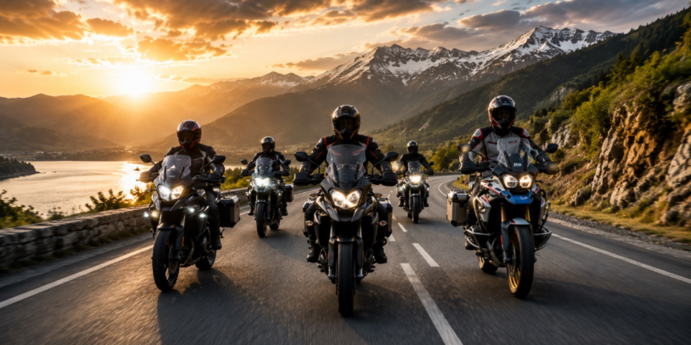
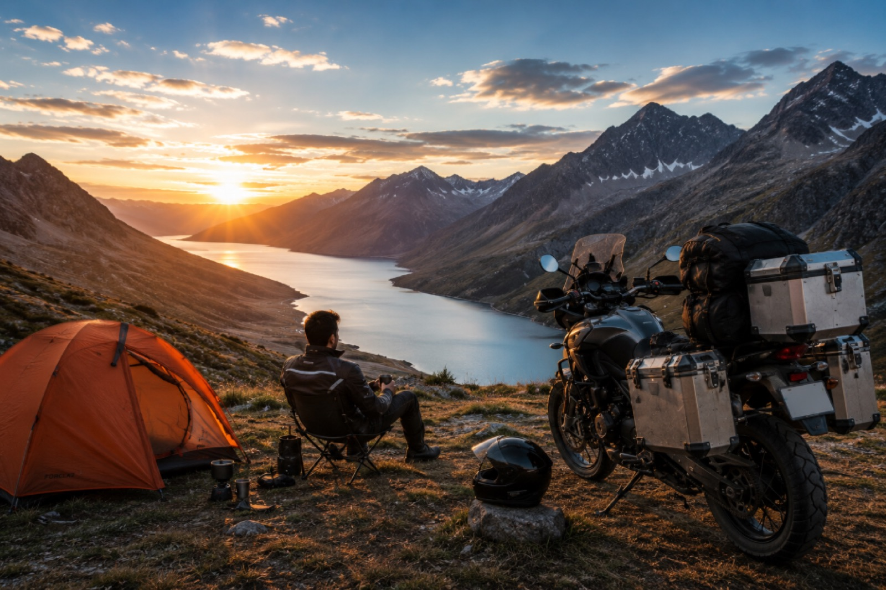
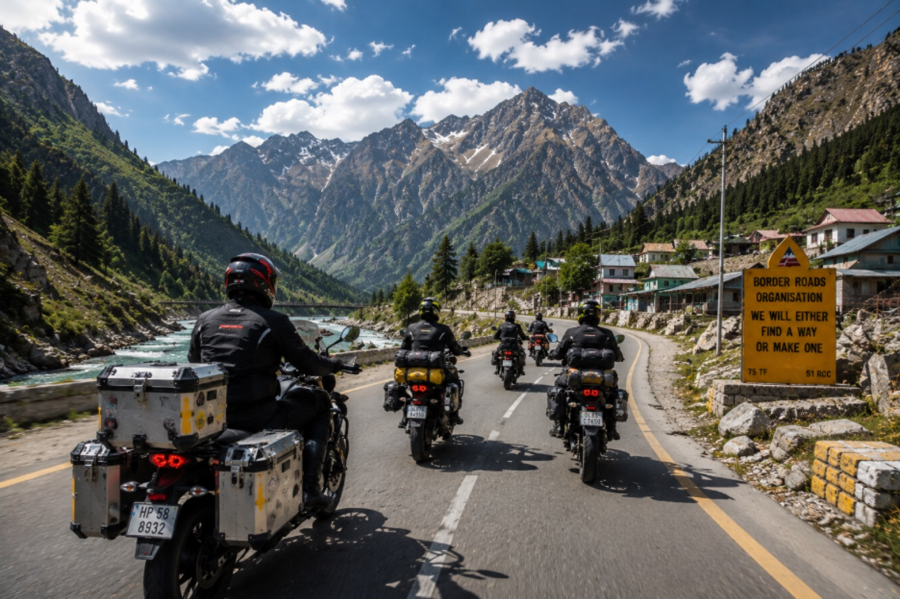

Single-Day vs Multi-Day Motorcycle Rides: What Changes?
Planning a motorcycle trip? Whether you're heading out for a quick weekend escape or embarking on a cross-country adventure, the preparation required can be very different. Understanding how single-day rides differ from multi-day tours helps you pack smarter, ride safer, and enjoy every mile with confidence.
Every Ride Starts the Same, But Preparation Doesn't
Every motorcycle journey begins with the excitement of hitting the open road. However, a ride that lasts a few hours requires a completely different approach than one that spans several days.
While both types of rides demand a well-maintained motorcycle and proper riding gear, factors such as luggage, route planning, accommodation, weather, and rider endurance become increasingly important on longer journeys. Knowing what to prepare for ensures a smoother, safer, and more enjoyable experience.
Single-Day Rides: Travel Light, Ride Free
Single-day rides are perfect for breakfast rides, weekend escapes, scenic routes, or exploring nearby destinations. Since you'll be returning home the same day, preparation is simple but should never be overlooked.
Before setting off, perform a quick motorcycle inspection:
- Check tire pressure and condition.
- Inspect brakes and lights.
- Verify engine oil and coolant levels.
- Fill up the fuel tank.
- Ensure the chain is properly lubricated.
- Confirm all controls are functioning correctly.
- Carry only the essentials:
- Valid riding license and vehicle documents
- Wallet and mobile phone
- Water bottle
- Basic first-aid kit
- Phone charger or power bank
Even if the ride is relatively short, avoid riding continuously for long periods. Taking a short break every 2–3 hours helps reduce fatigue, improves concentration, and makes the journey more enjoyable.

Multi-Day Rides: Preparation Becomes Part of the Adventure
Long-distance motorcycle touring involves much more than simply riding from one destination to another. Every day on the road introduces new variables, making planning a critical part of the experience.
In addition to preparing your motorcycle, you'll need to consider:
- Daily riding distance
- Accommodation
- Weather forecasts
- Fuel availability
- Road conditions
- Emergency contacts
- Mobile network coverage
Packing efficiently is equally important. Carry everything you'll need without overloading your motorcycle, as excessive weight can affect balance, handling, and rider comfort.

Essential Packing Checklist
- Extra riding clothes
- Rain gear or waterproof riding suit
- Toiletries
- Power bank and charging cables
- Basic motorcycle toolkit
- Tyre repair kit
- Portable air inflator (if available)
- First-aid kit
- Emergency contact information
- Important vehicle documents
- Luggage cover or waterproof bags
Organizing luggage into separate compartments makes it easier to access frequently used items without unpacking everything at every stop.
With Rydyt, riders can simplify both types of journeys by planning routes, navigating confidently, tracking rides, coordinating group rides, staying connected through chat and in-app calling, managing bike maintenance, and accessing safety features like SOS—all from a single motorcycle-focused platform. Whether it's a one-day escape or a week-long expedition, Rydyt helps make every ride smoother, safer, and more memorable.
Route Planning Matters More Than Distance
Whether you're riding for a single day or an entire week, good route planning can prevent unnecessary stress and unexpected delays.
For every ride, identify:
- Fuel stations
- Food and refreshment stops
- Rest areas
- Emergency medical facilities
- For multi-day trips, also plan:
- Overnight accommodation
- Alternate routes
- Areas with poor mobile connectivity
- Weather-dependent road conditions
Downloading offline maps before departure is highly recommended, especially when travelling through remote or mountainous regions where network coverage may be limited.
A flexible itinerary is often better than an overly ambitious one. Allow extra time for sightseeing, photography, unexpected road closures, or simply enjoying the ride.
Manage Your Energy, Not Just Your Motorcycle
Many riders focus heavily on motorcycle maintenance but overlook their own physical condition.
Fatigue is one of the biggest safety risks during long rides.
To stay alert:
- Stay hydrated throughout the day.
- Eat light, energy-rich meals instead of heavy foods.
- Stretch during every fuel or rest stop.
- Wear comfortable, weather-appropriate riding gear.
- Get adequate sleep before every riding day.
For multi-day tours, a good night's rest is just as important as maintaining your motorcycle. Starting each day refreshed improves concentration, reaction time, and overall riding enjoyment.
Stay Connected Throughout Your Journey
When riding with friends or covering long distances, staying connected adds both convenience and safety.
Motorcycle ride management apps like Rydyt help riders:
- Plan routes more efficiently
- Organize group rides
- Share ride details
- Track journeys in real time
- Coordinate fuel and rest stops
- Keep fellow riders updated throughout the trip

Whether you're riding for a single day or spending an entire week on the road, having everyone on the same page makes the experience smoother and more enjoyable.
Final Thoughts
Every motorcycle journey is about more than reaching a destination—it's about enjoying the ride safely and comfortably.
Single-day rides offer freedom, spontaneity, and quick escapes, while multi-day adventures reward careful planning with unforgettable experiences and lasting memories. Regardless of the distance, success comes down to three essentials: a well-prepared motorcycle, thoughtful route planning, and smart packing.
By maintaining your bike, managing your energy, and using ride-planning apps like Rydyt to stay organized and connected, you can spend less time worrying about logistics and more time enjoying the open road.
After all, the best rides aren't measured by the kilometers covered—they're remembered for the experiences collected along the way.